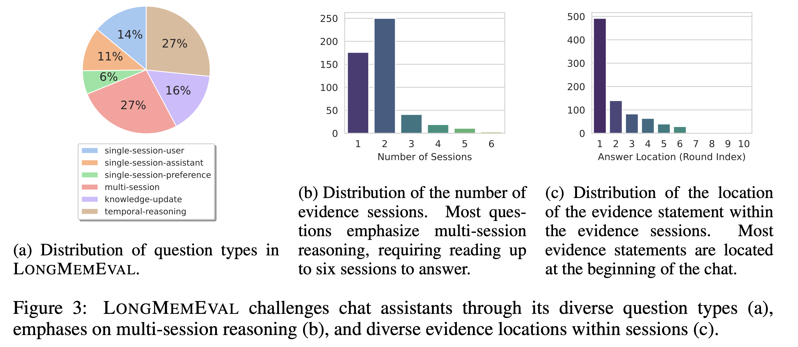

Benchmark Construction
We meticulously create 500 questions of seven types (see examples above) to test five long-term memory abilities:
- Information Extraction: Ability to recall specific information from extensive interactive histories, including the details mentioned by either the user or the assistant.
- Multi-Session Reasoning: Ability to synthesize the information across multiple history sessions to answer complex questions that involve aggregation and comparison.
- Knowledge Updates: Ability to recognize the changes in the user’s personal information and update the knowledge of the user dynamically over time.
- Temporal Reasoning: Awareness of the temporal aspects of user information, including both explicit time mentions and timestamp metadata in the interactions.
- Abstention: Ability to refrain from answering questions that involve unknown information, i.e., information not mentioned in the interaction history.

The following figure showcases the question distribution, the number of sessions required to find the answer, and the location of the evidence statements inside sessions.
Inspired by the "needle-in-a-haystack" test, we design an attribute-controlled pipeline to compile a coherent, extensible, and timestamped chat history for each question. Two standard test sets are created:
- LongMemEvalS: each question's chat history has roughly 115k tokens (30-40 sessions)
- LongMemEvalM: each question's chat history has roughly 500 sessions (~1.5M tokens)